This package contains discrete control blocks with fixed sample period. Every component of this package is structured in the following way:
A sampled data system may consist of components of package Discrete and of every other purely algebraic input/output block, such as the components of packages Modelica.Blocks.Math, Modelica.Blocks.Nonlinear or Modelica.Blocks.Sources.
Extends from Modelica.Icons.Package (Icon for standard packages).
| Name | Description |
|---|---|
| 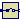 Sampler | Ideal sampling of continuous signals |
| 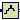 ZeroOrderHold | Zero order hold of a sampled-data system |
| 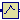 FirstOrderHold | First order hold of a sampled-data system |
| 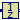 UnitDelay | Unit Delay Block |
| 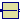 TransferFunction | Discrete Transfer Function block |
| 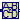 StateSpace | Discrete State Space block |
| 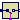 TriggeredSampler | Triggered sampling of continuous signals |
| TriggeredMax | Compute maximum, absolute value of continuous signal at trigger instants |
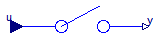
Samples the continues input signal with a sampling rate defined via parameter samplePeriod.
Extends from Interfaces.DiscreteSISO (Single Input Single Output discrete control block).
| Type | Name | Default | Description |
|---|---|---|---|
| Time | samplePeriod | Sample period of component [s] | |
| Time | startTime | 0 | First sample time instant [s] |
| Type | Name | Description |
|---|---|---|
| input RealInput | u | Continuous input signal |
| output RealOutput | y | Continuous output signal |
block Sampler "Ideal sampling of continuous signals"
extends Interfaces.DiscreteSISO;
equation
when {sampleTrigger, initial()} then
y = u;
end when;
end Sampler;
The output is identical to the sampled input signal at sample time instants and holds the output at the value of the last sample instant during the sample points.
Extends from Interfaces.DiscreteSISO (Single Input Single Output discrete control block).
| Type | Name | Default | Description |
|---|---|---|---|
| Time | samplePeriod | Sample period of component [s] | |
| Time | startTime | 0 | First sample time instant [s] |
| Type | Name | Description |
|---|---|---|
| input RealInput | u | Continuous input signal |
| output RealOutput | y | Continuous output signal |
block ZeroOrderHold "Zero order hold of a sampled-data system"
extends Interfaces.DiscreteSISO;
output Real ySample(start=0, fixed=true);
equation
when {sampleTrigger, initial()} then
ySample = u;
end when;
/* Define y=ySample with an infinitesimal delay to break potential
algebraic loops if both the continuous and the discrete part have
direct feedthrough
*/
y = pre(ySample);
end ZeroOrderHold;
The output signal is the extrapolation through the values of the last two sampled input signals.
Extends from Interfaces.DiscreteSISO (Single Input Single Output discrete control block).
| Type | Name | Default | Description |
|---|---|---|---|
| Time | samplePeriod | Sample period of component [s] | |
| Time | startTime | 0 | First sample time instant [s] |
| Type | Name | Description |
|---|---|---|
| input RealInput | u | Continuous input signal |
| output RealOutput | y | Continuous output signal |
block FirstOrderHold "First order hold of a sampled-data system"
extends Interfaces.DiscreteSISO;
protected
Real ySample;
Modelica.SIunits.Time tSample;
Real c;
equation
when sampleTrigger then
ySample = u;
tSample = time;
c = if firstTrigger then 0 else (ySample - pre(ySample))/samplePeriod;
end when;
/* Use pre(ySample) and pre(c) to break potential algebraic loops by an
infinitesimal delay if both the continuous and the discrete part
have direct feedthrough.
*/
y = pre(ySample) + pre(c)*(time - tSample);
end FirstOrderHold;
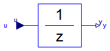
This block describes a unit delay:
1
y = --- * u
z
that is, the output signal y is the input signal u of the previous sample instant. Before the second sample instant, the output y is identical to parameter yStart.
Extends from Interfaces.DiscreteSISO (Single Input Single Output discrete control block).
| Type | Name | Default | Description |
|---|---|---|---|
| Real | y_start | 0 | Initial value of output signal |
| Time | samplePeriod | Sample period of component [s] | |
| Time | startTime | 0 | First sample time instant [s] |
| Type | Name | Description |
|---|---|---|
| input RealInput | u | Continuous input signal |
| output RealOutput | y | Continuous output signal |
block UnitDelay "Unit Delay Block"
parameter Real y_start=0 "Initial value of output signal";
extends Interfaces.DiscreteSISO;
equation
when sampleTrigger then
y = pre(u);
end when;
initial equation
y = y_start;
end UnitDelay;
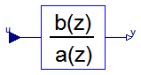
The discrete transfer function block defines the transfer function between the input signal u and the output signal y. The numerator has the order nb-1, the denominator has the order na-1.
b(1)*z^(nb-1) + b(2)*z^(nb-2) + ... + b(nb)
y(z) = -------------------------------------------- * u(z)
a(1)*z^(na-1) + a(2)*z^(na-2) + ... + a(na)
State variables x are defined according to controller canonical form. Initial values of the states can be set as start values of x.
Example:
Blocks.Discrete.TransferFunction g(b = {2,4}, a = {1,3});
results in the following transfer function:
2*z + 4
y = --------- * u
z + 3
Extends from Interfaces.DiscreteSISO (Single Input Single Output discrete control block).
| Type | Name | Default | Description |
|---|---|---|---|
| Real | b[:] | {1} | Numerator coefficients of transfer function. |
| Real | a[:] | Denominator coefficients of transfer function. | |
| Time | samplePeriod | Sample period of component [s] | |
| Time | startTime | 0 | First sample time instant [s] |
| Type | Name | Description |
|---|---|---|
| input RealInput | u | Continuous input signal |
| output RealOutput | y | Continuous output signal |
block TransferFunction "Discrete Transfer Function block"
parameter Real b[:]={1} "Numerator coefficients of transfer function.";
parameter Real a[:] "Denominator coefficients of transfer function.";
extends Interfaces.DiscreteSISO;
output Real x[size(a, 1) - 1](each start=0, each fixed=true)
"State of transfer function from controller canonical form";
protected
parameter Integer nb=size(b, 1) "Size of Numerator of transfer function";
parameter Integer na=size(a, 1) "Size of Denominator of transfer function";
Real x1;
Real xext[size(a, 1)];
equation
when sampleTrigger then
/* State variables x are defined according to
controller canonical form. */
x1 = (u - a[2:size(a, 1)]*pre(x))/a[1];
xext = vector([x1; pre(x)]);
x = xext[1:size(x, 1)];
y = vector([zeros(na - nb, 1); b])*xext;
end when;
/* This is a non-sampled equation and above there are two separate
when-clauses. This breaks feeback loops without direct terms,
since in that case y will be independent of x1 (and only dependent
on pre(x)).
*/
/* Corresponding (simpler) version using when-semantics of Modelica 1.3:
equation
when sampleTrigger then
[x; xn] = [x1; pre(x)];
[u] = transpose([a])*[x1; pre(x)];
[y] = transpose([zeros(na - nb, 1); b])*[x1; pre(x)];
end when;
*/
end TransferFunction;
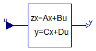
The discrete state space block defines the relation between the input u=inPort.signal and the output y=outPort.signal in state space form:
x = A * pre(x) + B * u
y = C * pre(x) + D * u
where pre(x) is the value of the discrete state x at the previous sample time instant. The input is a vector of length nu, the output is a vector of length ny and nx is the number of states. Accordingly
A has the dimension: A(nx,nx),
B has the dimension: B(nx,nu),
C has the dimension: C(ny,nx),
D has the dimension: D(ny,nu)
Example:
parameter: A = [0.12, 2;3, 1.5]
parameter: B = [2, 7;3, 1]
parameter: C = [0.1, 2]
parameter: D = zeros(ny,nu)
results in the following equations:
[x[1]] [0.12 2.00] [pre(x[1])] [2.0 7.0] [u[1]]
[ ] = [ ]*[ ] + [ ]*[ ]
[x[2]] [3.00 1.50] [pre(x[2])] [0.1 2.0] [u[2]]
[pre(x[1])] [u[1]]
y[1] = [0.1 2.0] * [ ] + [0 0] * [ ]
[pre(x[2])] [u[2]]
Extends from Interfaces.DiscreteMIMO (Multiple Input Multiple Output discrete control block).
| Type | Name | Default | Description |
|---|---|---|---|
| Real | A[:, size(A, 1)] | Matrix A of state space model | |
| Real | B[size(A, 1), :] | Matrix B of state space model | |
| Real | C[:, size(A, 1)] | Matrix C of state space model | |
| Real | D[size(C, 1), size(B, 2)] | zeros(size(C, 1), size(B, 2)) | Matrix D of state space model |
| Time | samplePeriod | Sample period of component [s] | |
| Time | startTime | 0 | First sample time instant [s] |
| Integer | nin | size(B, 2) | Number of inputs |
| Integer | nout | size(C, 1) | Number of outputs |
| Type | Name | Description |
|---|---|---|
| input RealInput | u[nin] | Continuous input signals |
| output RealOutput | y[nout] | Continuous output signals |
block StateSpace "Discrete State Space block"
parameter Real A[:, size(A, 1)] "Matrix A of state space model";
parameter Real B[size(A, 1), :] "Matrix B of state space model";
parameter Real C[:, size(A, 1)] "Matrix C of state space model";
parameter Real D[size(C, 1), size(B, 2)]=zeros(size(C, 1), size(B, 2))
"Matrix D of state space model";
extends Interfaces.DiscreteMIMO(final nin=size(B, 2), final nout=size(C, 1));
output Real x[size(A, 1)] "State vector";
equation
when sampleTrigger then
x = A*pre(x) + B*u;
y = C*pre(x) + D*u;
end when;
end StateSpace;
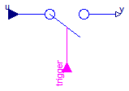
Samples the continuous input signal whenever the trigger input signal is rising (i.e., trigger changes from false to true) and provides the sampled input signal as output. Before the first sampling, the output signal is equal to the initial value defined via parameter y0.
Extends from Interfaces.DiscreteBlockIcon (Graphical layout of discrete block component icon).
| Type | Name | Default | Description |
|---|---|---|---|
| Real | y_start | 0 | initial value of output signal |
| Type | Name | Description |
|---|---|---|
| input RealInput | u | Connector with a Real input signal |
| output RealOutput | y | Connector with a Real output signal |
| input BooleanInput | trigger |
block TriggeredSampler "Triggered sampling of continuous signals" extends Interfaces.DiscreteBlockIcon; parameter Real y_start=0 "initial value of output signal";Modelica.Blocks.Interfaces.RealInput u "Connector with a Real input signal"; Modelica.Blocks.Interfaces.RealOutput y "Connector with a Real output signal"; Modelica.Blocks.Interfaces.BooleanInput trigger; equation when trigger then y = u; end when; initial equation y = y_start;end TriggeredSampler;
Samples the continuous input signal whenever the trigger input signal is rising (i.e., trigger changes from false to true). The maximum, absolute value of the input signal at the sampling point is provided as output signal.
Extends from Interfaces.DiscreteBlockIcon (Graphical layout of discrete block component icon).
| Type | Name | Description |
|---|---|---|
| input RealInput | u | Connector with a Real input signal |
| output RealOutput | y | Connector with a Real output signal |
| input BooleanInput | trigger |
block TriggeredMax "Compute maximum, absolute value of continuous signal at trigger instants" extends Interfaces.DiscreteBlockIcon;Modelica.Blocks.Interfaces.RealInput u "Connector with a Real input signal"; Modelica.Blocks.Interfaces.RealOutput y "Connector with a Real output signal"; Modelica.Blocks.Interfaces.BooleanInput trigger; equation when trigger then y = max(pre(y), abs(u)); end when; initial equation y = 0;end TriggeredMax;